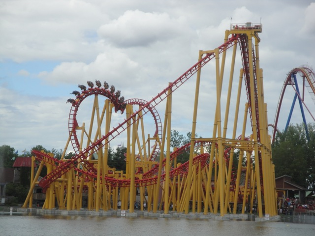
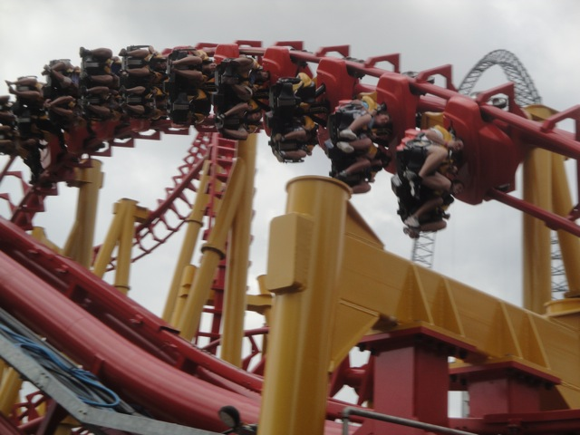
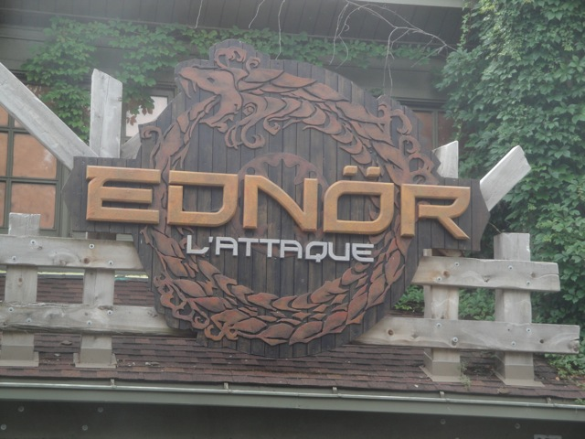

| |
Ednor Review

We're here at La Ronde to ride your Endor. Your Typical SLC (Oops, Its actually called Ednor. ED-NOR. I keep calling it Endor, like the moon from Star Wars. Because that sounds much more natural than Ednor). After waiting for a disgustingly long time (Yes, even if you buy the flashpass, you'll still wait a horribly long time. I waited over 30 minutes with Gold Flashpass. Yeah, it's that f*cking bad), you climb into the seat and pull down the shoulder harness. Then you dispatch. Up the lift you go. Once you reach the top, it's all downhill from there. You curve and away and down you go! However, from here on out, this ride hurts. And it hurts A LOT!!! Once you reach the bottom of the first drop, it's all fast. Then you soar up in the sea serpent roll, It's very painful going through it, your head is banging around like as if it were at a rock concert. Then after flipping upsidedown a second time, you head back down and head straight for the overbanked turn. On some SLCs, this turn is a lot of fun, but on Ednor, it's just an excuse for some sheering pain. Then you head for the sidewinder. You get a REALLY REALLY REALLY BAD jolt coming out of it. And it hurts. It hurts A LOT!! Then you turn around, getting a decent view of La Ronde and the city of Montreal, too bad you're in too much pain to appreciate this view. After that, you straight for two inline twists. The Inline Twists are AWFUL!!! They shake you like a british nanny. You don't even notice you're upsidedown. All you notice is "OWW!!! OWW!! GET ME OFF THIS F*CKING DEATH TRAP!!!" Then there's not that much. You go through a small hill, around a turn, and down another slight hill, only to glide into the brake run. And yes, even that part hurts. Ednor is a HORRIBLE SLC. While it's not quite as bad as T3, Ednor is still without a doubt one of the worst SLCs ever. And they have Vampire, one of the best Batman clones in the same park, making you feel even dumber for riding and waiting for this peice of sh*t. I would not recommend you ride Ednor unless you're an SLC Virgin or a credit whore with an iron skull.
4/10
Location: La Ronde
Opened at Six Flags Astroworld in 1999
Moved to La Ronde in 2010
Built by: Vekoma
Last Ridden: August 2, 2011
I have ridden this exact same ride at the following parks.
Canada's Wonderland
Elitch Gardens
Geauga Lake
Heide Park
Kentucky Kingdom
Michigan's Adventure
Movie Park Germany
Six Flags America
Six Flags Discovery Kingdom
Six Flags New England
Ednor Photos


Home
|